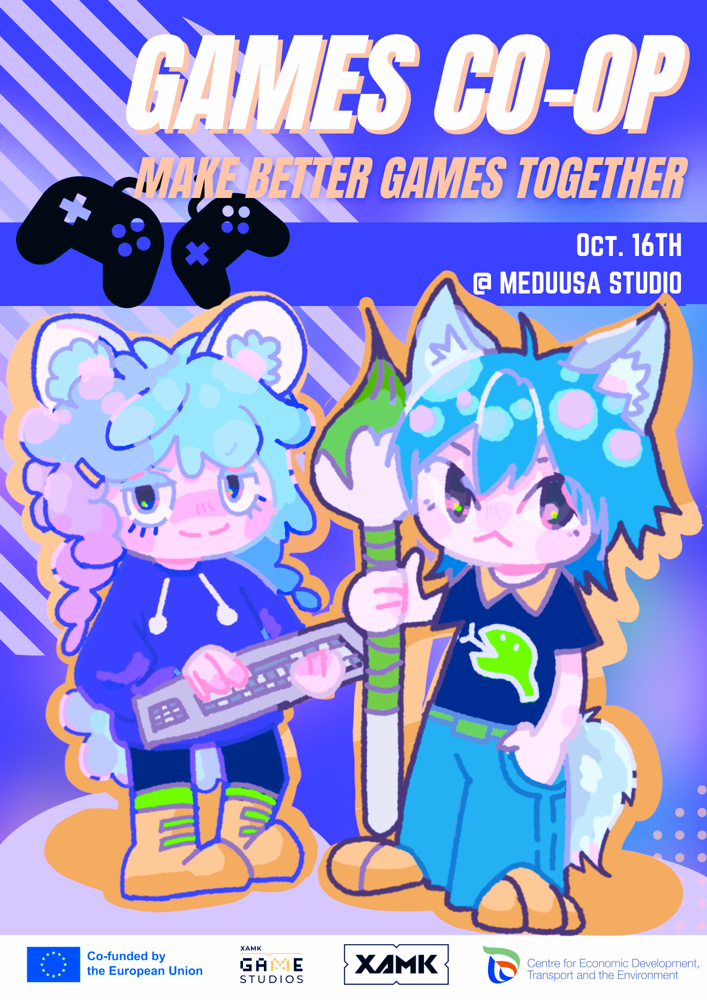
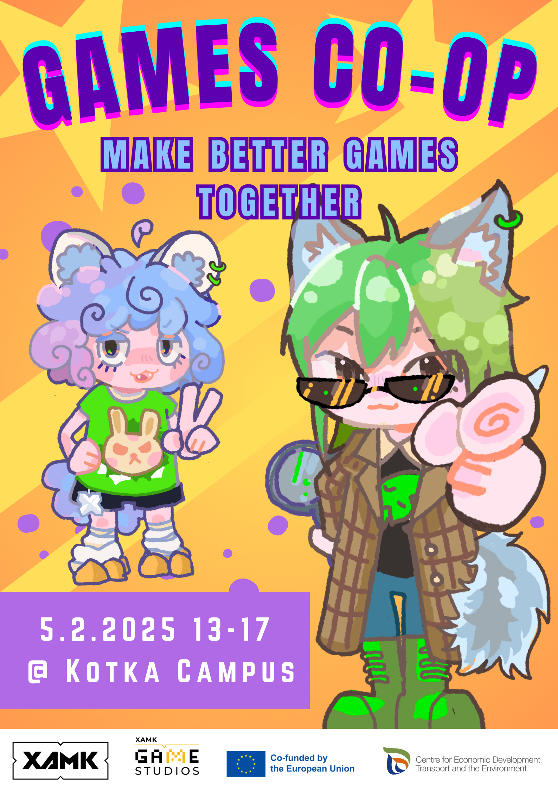
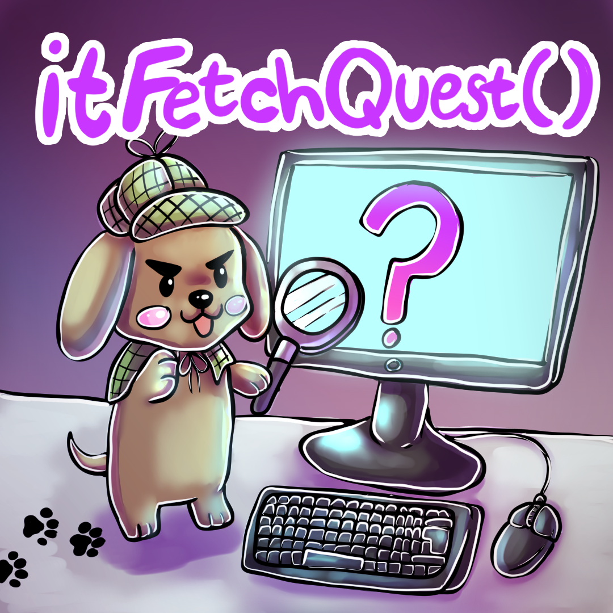

Event Organizing
--- Different events that I have organized ---

Events
- Games CO-OP
- itFetchQuest()
- LANs
Event Summaries
-
Games CO-OP
Games Co-op is the biggest event that I have helped organized. In XAMK we have Game Design, Game Programming and Game Technologies Bachelor courses. Programming and Technologies can be found in Kotka while the Designers can be found in Kouvola. This is why we decided to create this event; to bring all of the game industry students under the same roof.
I am one of the lead organizers along side Mikael (Miksu) Joensuu and Nicole Winqvist. Miksu and Nicole were the ones presenting this idea to me and I agreed to be a part of the organizing team. I am a firm believer that co-operation is the most important skill to have for working on a large scale project like video games. The events purpose is to have young students attend it while older students would be able to share their own insights for the newer students in the industry.
  -
itFetchQuest()
itFetchQuest() was supposed to be collaboration event with Cyberclub, Kotka Cybersecurity student organization. The event was to be a fun activity going around Kotka to see the city for new and old students. Students would be divided into teams of 4 and then given a problem solving task list which would benefit student teams with both Game industry and Cybersecurity students. This way we could start to mend the ICT students divide that has happened in the past years.
Unfortunately, the event had to be cancelled. Not enough students were interested in joining the student party. But I will try again next year. This time we will take into consideration what the other students want form an event held both by Game industry and Cybersecurity students and plan a new event for the beginning of the next semester.
 -
LANs
I have been the main organizer for LANs that we have held on the Kotka campus. I have also planned and executed multiple different tournaments during the LANs.
I have wanted to keep the LANs as casual and cozy as possible. The LANs have been open for all ICT students, current and former students to attend. We have had on average about 40 people attending most LANs and luckily we have gotten funding for the LANs from our study unit and tutoring money.